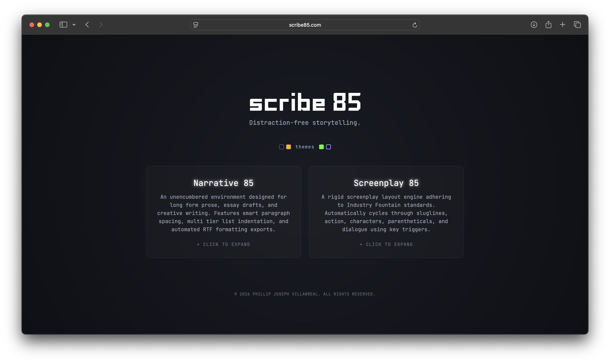
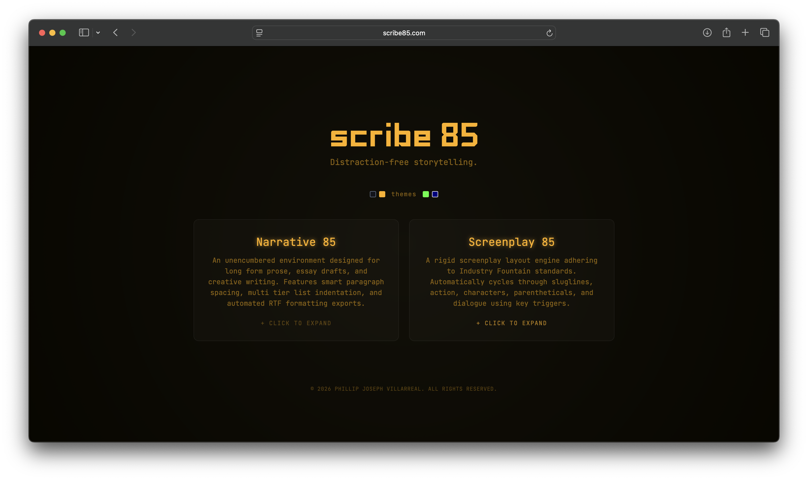
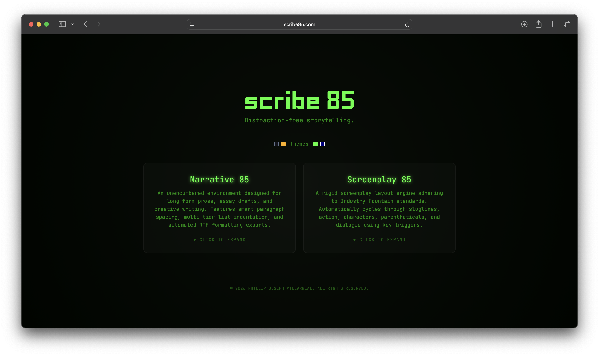

A single-file writing environment engineered from scratch to eliminate cognitive friction for creative writers and screenwriters. Operates entirely in-browser with ambient focus mechanics, zero subscriptions, and retro CRT color profiles.
Zero-to-One Product Case Study
Role
Product Designer & Engineer
Deliverable
Browser App & Export Pipeline
Stack
Vanilla JS, Modern CSS, GitHub Pages
Target Audience
Screenwriters & Novelists
The Gap vs. The Solution
Traditional text editors overload the writing space with persistent toolbars, paywalls, and complex formatting setups that interrupt creative flow.
The Problem (Cognitive Friction)
When opening conventional writing tools, writers face immediate hurdles:
Invasive UI framing and toolbars competing for visual focus.
Subscription paywalls on core features like screenplay formatting.
Inconsistent local saving and forced cloud accounts.
Bright default surfaces causing severe eye strain during long-form composition.
The scribe85 Solution
Designed to honor deep concentration through zero-overhead architecture:
Ambient Focus State: UI controls fade into darkness while typing and return instantly on key triggers.
Ergonomic Container Boundary: Restricts text lines to an optimal 60–75 characters per line (CPL).
Custom Screenplay Engine: Automatic indentation and export logic for standard script layouts without fees.
Local Auto-Save: In-browser persistence ensures zero work loss without forced log-ins.
1. Low-Fidelity Wireframes
Initial architectural sketches focusing on spatial ratios, line-length constraints, and essential control placement before styling.
2. Mid-Fidelity Wireframes
Refining typography scales, drawer micro-interactions, and testing the auto-fading control triggers across tablet and desktop canvas sizes.
Theme Modes Interface Preview
Simulating retro terminal ergonomics inspired by 1980s CRT displays to minimize eye fatigue during extended composition sessions.

[Slide 1: Classic Dark Theme Placeholder - Swap src]
';"
/>

[Slide 2: Amber CRT Theme Placeholder - Swap src]
';"
/>

[Slide 3: Matrix Green Theme Placeholder - Swap src]